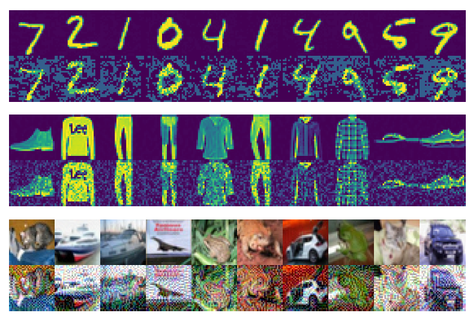

<!DOCTYPE html>
<html lang="en">

<head>
  <meta charset="utf-8">
  <meta content="width=device-width, initial-scale=1.0" name="viewport">

  <title>iPortfolio Bootstrap Template - Index</title>
  <meta content="" name="description">
  <meta content="" name="keywords">

  <!-- Favicons -->
  <link href="assets/img/favicon.png" rel="icon">
  <link href="assets/img/apple-touch-icon.png" rel="apple-touch-icon">

  <!-- Google Fonts -->
  <link href="https://fonts.googleapis.com/css?family=Open+Sans:300,300i,400,400i,600,600i,700,700i|Raleway:300,300i,400,400i,500,500i,600,600i,700,700i|Poppins:300,300i,400,400i,500,500i,600,600i,700,700i" rel="stylesheet">

  <!-- Vendor CSS Files -->
  <link href="assets/vendor/bootstrap/css/bootstrap.min.css" rel="stylesheet">
  <link href="assets/vendor/icofont/icofont.min.css" rel="stylesheet">
  <link href="assets/vendor/boxicons/css/boxicons.min.css" rel="stylesheet">
  <link href="assets/vendor/venobox/venobox.css" rel="stylesheet">
  <link href="assets/vendor/owl.carousel/assets/owl.carousel.min.css" rel="stylesheet">
  <link href="assets/vendor/aos/aos.css" rel="stylesheet">

  <!-- Template Main CSS File -->
  <link href="assets/css/style.css" rel="stylesheet">

  <!-- =======================================================
  * Template Name: iPortfolio - v1.4.0
  * Template URL: https://bootstrapmade.com/iportfolio-bootstrap-portfolio-websites-template/
  * Author: BootstrapMade.com
  * License: https://bootstrapmade.com/license/
  ======================================================== -->
</head>

<body>

  <!-- ======= Mobile nav toggle button ======= -->
  <button type="button" class="mobile-nav-toggle d-xl-none"><i class="icofont-navigation-menu"></i></button>

  <!-- ======= Header ======= -->
  <header id="header">
    <div class="d-flex flex-column">

      <div class="profile">
        
        <h1 class="text-light"><a href="index.html">Ye-Ji Mun</a></h1>
        <div class="social-links mt-3 text-center">
          <a href="#" class="twitter"><i class="bx bxl-twitter"></i></a>
          <a href="#" class="facebook"><i class="bx bxl-facebook"></i></a>
          <a href="#" class="instagram"><i class="bx bxl-instagram"></i></a>
          <a href="#" class="google-plus"><i class="bx bxl-skype"></i></a>
          <a href="#" class="linkedin"><i class="bx bxl-linkedin"></i></a>
        </div>
      </div>

      <nav class="nav-menu">
        <ul>
          <li class="active"><a href="index.html"><i class="bx bx-home"></i> <span>Home</span></a></li>
          <li><a href="#about"><i class="bx bx-user"></i> <span>About</span></a></li>
          <li><a href="#resume"><i class="bx bx-file-blank"></i> <span>Resume</span></a></li>
          <li><a href="#research"><i class="bx bx-book-content"></i> Research</a></li>
          <li><a href="#coursework"><i class="bx bx-server"></i> Coursework</a></li>


        </ul>
      </nav><!-- .nav-menu -->
      <button type="button" class="mobile-nav-toggle d-xl-none"><i class="icofont-navigation-menu"></i></button>

    </div>
  </header><!-- End Header -->

  <!-- ======= Hero Section ======= -->
  <section id="hero" class="d-flex flex-column justify-content-center align-items-center">
    <div class="hero-container" data-aos="fade-in">
      <h1>Ye-Ji Mun</h1>
      <p>I'm <span class="typed" data-typed-items="a Researcher, a Robocist, a Developer, a Designer"></span></p>
    </div>
  </section><!-- End Hero -->

  <main id="main">

    <!-- ======= About Section ======= -->
    <section id="about" class="about">
      <div class="container">

        <div class="section-title">
          <h2>About</h2>
        
        </div>
          
        <div class="row">
          <div class="col-lg-4" data-aos="fade-right">
            
          </div>
          <div class="col-lg-8 pt-4 pt-lg-0 content" data-aos="fade-left">
            <h3>Graduate Student Researcher</h3>
            <p stye="text-align:center/left/right;">
              I am currently a second-year Ph.D. candidate at University of Illinois, Urbana-Champaign (UIUC). 
              My advisor is Prof. Katherine Driggs-Campbell, I am doing research in Human-Centered Autonomy Laboratory (HCAL). 
              Prior to UIUC, I recieved my B.S. in Electronics Engineering at Ewha Womans University, Seoul, South Korea in 2018.
              My research interest is in human-robot interaction and robust learning-based decision-making.
            </p>
 
            <div class="row">
              <div class="col-lg-15">
                <ul>
                  <li><i class="icofont-rounded-right"></i> <strong>Education:</strong> University of Illinois at Urbana-Champaign</li>
                  <li><i class="icofont-rounded-right"></i> <strong>Title:</strong> second-year Ph.D. student</li>
                  <!--</ul>
                  </div>
                  <div class="col-lg-6">
                  <ul>-->
                  <li><i class="icofont-rounded-right"></i> <strong>Email:</strong> yejimun2@illinois.edu</li>
                  <li><i class="icofont-rounded-right"></i> <strong>Office:</strong> 268 Coordinated Science Laboratory, UIUC </li>
          
                </ul>
              </div>
            </div>
          </div>

      </div>
    </section><!-- End About Section -->

   
    <!-- ======= Resume Section ======= -->
    <section id="resume" class="resume">
      <div class="container">

        <div class="section-title">
          <h2>Resume</h2>
        </div>

        <div class="row">
          <div class="col-lg-6" data-aos="fade-up">
            <h3 class="resume-title">Education</h3>
            <div class="resume-item">
              <h4>MS/Ph.D. in Electrical &amp; Computer Engineering</h4>
              <h5>2019 - current</h5>
              <p><em>University of Illinois at Urbana-Champaign, Illinois, United States</em></p>
              <p>Academic Advisor : Prof. Katherine Rose Driggs-Campbell</p>
              <p>GPA : 4.0/4.0</p>
              <ul><li>Develop safe decision-making of autonomous vehicle by predicting map of occluded areas observing interaction between road users</li>
                <li>Establish dynamic task scheduling for human-robot collaboration for manufacturing assembly task </li></ul>
            </div>
            <div class="resume-item">
              <h4>Bachelor Science in Electronics Engineering</h4>
              <h5>2014 - 2018</h5>
              <p><em>Ewha Womans University, Seoul, South Korea</em></p>
              <p>GPA : 3.92/4.3 (Major : 4.03/4.3)</p>
            </div>
          </div>
          <div class="col-lg-6" data-aos="fade-up" data-aos-delay="100">
            <h3 class="resume-title">Professional Experience</h3>
            <div class="resume-item">
              <h4>Information Coding and Processing Lab, Research Assistant</h4>
              <h5>Oct.2017 - June 2019</h5>
              <p><em>Ewha Womans University, Seoul, South Korea </em></p>
              <ul>
                <li>Built an adversarial robust Convolutional Neural Network (CNN) classifier that employs multiple and independent random binary code per input class and train them with ensemble of homogeneous CNN</li>
                <li>Guided lab interns how to install Python and TensorFlow and introduce coding framework of TensorFlow. </li>
                <li>Improved the image classification accuracy of CNN by up to 2.1% by incorporating convolutional coding</li>
              </ul>
            </div>
            <div class="resume-item">
              <h4>Advanced Flexible Electronics Lab, Research Assistant</h4>
              <h5>Aug. 2018</h5>
              <p><em>Seoul National University, Seoul, South Korea</em></p>
              <p>Fabricated flexible substrates using polymer and printed 5x5 micro LED circuits with Inkjet Printer.</p>

            </div>
          </div>
        </div>

      </div>
    </section><!-- End Resume Section -->

    <!-- ======= Research Section ======= -->
    <section id="portfolio" class="portfolio section-bg">
      <div class="container">
        <div class="section-title">
          <h2>Research</h2>
          <p>My research interest lies in the areas of human-robot interaction and robustness of the learning-based algorithms.</p>
        </div>

        <div class="container">
          <div class="row">
            <div class="col-lg-4" data-aos="fade-right">
              
            </div>
            <div class="col-lg-8 pt-4 pt-lg-0 content" data-aos="fade-left">
              <h3>CNN Defending against Adversarial Attacks</h3>
              <p stye="text-align:center/left/right;">
                Despite the excellent classification performance, recent research has revealed that the
                Convolutional Neural Network (CNN) could be readily deceived by only the small adversarial perturbation.
                Its imperceptible to human eyes and transferability from one model to another actually threaten the security
                of a CNN-based system. This project aims to build a robust CNN structure that has stable performance against the external disturbances during image classification task.


              </p>
              <p>


              </p>
            </div>
          </div>
        </div>

        <div class="container">
          <div class="row">
            <div class="col-lg-4 col-lg-offset-4" data-aos="fade-right">
              <video width="320" height="240" controls>
                <source src = "assets/img/predmap_video.mp4" type=video/mp4>
            </div>
            <div class="col-lg-8 pt-4 pt-lg-0 content" data-aos="fade-left">
              <h3>Autonomous Driving under Occlusion</h3>
              <p stye="text-align:center/left/right;">
                Many tasks such as object detection and pattern recognition can be performed at levels surpassing that of humans thanks to the recent developments in deep neural
                networks. However, all sensors still have limited sensing capabilities which can result in serious car accidents due to the unobservable risk. Humans, on the other hand, have great
                insights to handle unobservable situations, and many researchers have attempted to adapt these human-like behaviors. This work aims to incorporate interaction between
                road users to deal with decision-making under occlusion cases during urban driving.


              </p>
            </div>
          </div>
        </div>

        <div class="container">>
          <div class="row">
            <div class="col-lg-4 col-lg-offset-4" data-aos="fade-right">
              <!--  -->
            </div>
            <div class="col-lg-8 pt-4 pt-lg-0 content" data-aos="fade-left">
              <h3>Human-Robot Collaboration in Manufacturing Assembly</h3>
              <p stye="text-align:center/left/right;">
                The purpose of this project is to enhance the eciency and safety of human-robot collaboration while assembling a product. 
                I am focusing on making the robot learn to allocate its own task based on its capability and human's intention. 
                Human's intention and each agents' capabilities are are usually not fully observable and may change during the process. 
                Fully understanding tehse factors and assigning tasks accordingly will greatly enhance the task performance.
              </p>
            </div>
          </div>
        </div>
      </div>
                  
                
            
        

      </div>
    </section><!-- End research Section -->


    <!-- ======= Publication Section ======= -->
    <section id="publication" class="publication section-bg">
      <div class="container">
  
          <div class="section-title">
            <h2>Publication</h2>
            
            <div class="row">
              <div class="col-lg-8 pt-4 pt-lg-0 content" data-aos="fade-left">  
                <p> Mun, Y. J., Kim, N., Lee, J., & Kang, J. W. (2018). Correcting misclassified image features with convolutional coding. In Proceedings of the Korean Society of Broadcast Engineers Conference (pp. 11-14). The Korean Institute of Broadcast and Media Engineers.</p>
                <p> Mun, Y. J., & Kang, J. W. (2019). Ensemble of Random Binary Output Encoding for Adversarial Robustness. IEEE Access, 7, 124632-124640. </p>
              </div>
              
          </div>
  
      </div>
    </section><!-- End publication Section -->


    <!-- ======= Coursework Section ======= -->
    <section id="coursework" class="coursework section-bg">
    <div class="container">

        <div class="section-title">
          <h2>Coursework</h2>
          
          <div class="row">
            <div class="col-lg-8 pt-4 pt-lg-0 content" data-aos="fade-left">  
              <ul>
                <li>Introduction to Robotics</li>
                <li>Control System Theory & Design </li>
                <li>Introduction to Optimization</li>
                <li>MDPs, Reinforcement Learning</li>
                <li>Pattern Recognition</li>
                <li>Learning-based Robotics</li>
              </ul>
            </div>
            
        </div>

    </div>
  </section><!-- End coursework Section -->


        


  </main><!-- End #main -->

  <!-- ======= Footer ======= -->
  <footer id="footer">
    <div class="container">
      <div class="copyright">
        &copy; Copyright <strong><span>iPortfolio</span></strong>
      </div>
      <div class="credits">
        <!-- All the links in the footer should remain intact. -->
        <!-- You can delete the links only if you purchased the pro version. -->
        <!-- Licensing information: https://bootstrapmade.com/license/ -->
        <!-- Purchase the pro version with working PHP/AJAX contact form: https://bootstrapmade.com/iportfolio-bootstrap-portfolio-websites-template/ -->
        Designed by <a href="https://bootstrapmade.com/">BootstrapMade</a>
      </div>
    </div>
  </footer><!-- End  Footer -->

  <a href="#" class="back-to-top"><i class="icofont-simple-up"></i></a>

  <!-- Vendor JS Files -->
  <script src="assets/vendor/jquery/jquery.min.js"></script>
  <script src="assets/vendor/bootstrap/js/bootstrap.bundle.min.js"></script>
  <script src="assets/vendor/jquery.easing/jquery.easing.min.js"></script>
  <script src="assets/vendor/php-email-form/validate.js"></script>
  <script src="assets/vendor/waypoints/jquery.waypoints.min.js"></script>
  <script src="assets/vendor/counterup/counterup.min.js"></script>
  <script src="assets/vendor/isotope-layout/isotope.pkgd.min.js"></script>
  <script src="assets/vendor/venobox/venobox.min.js"></script>
  <script src="assets/vendor/owl.carousel/owl.carousel.min.js"></script>
  <script src="assets/vendor/typed.js/typed.min.js"></script>
  <script src="assets/vendor/aos/aos.js"></script>

  <!-- Template Main JS File -->
  <script src="assets/js/main.js"></script>

</body>

</html>